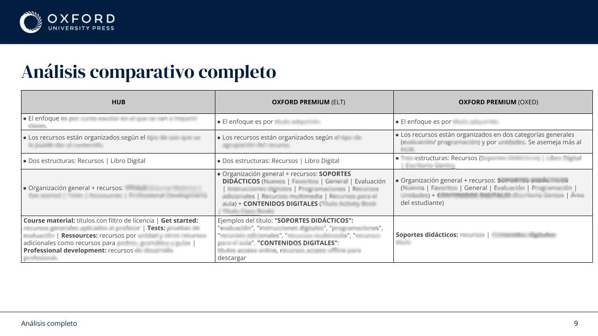
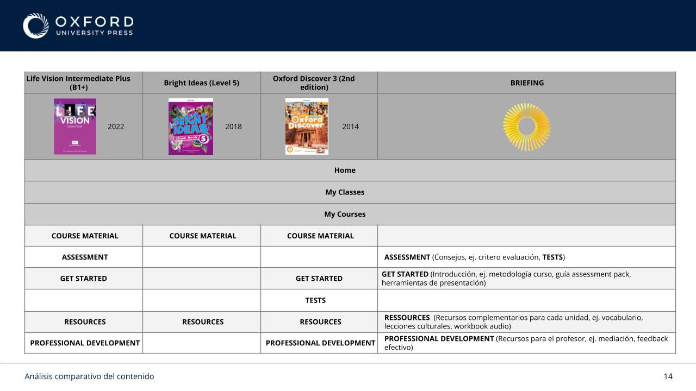
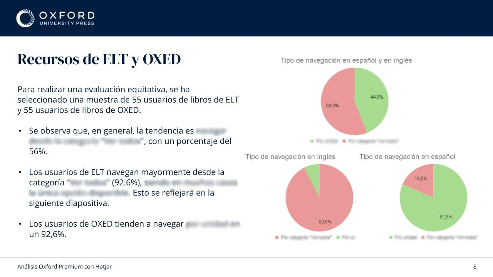
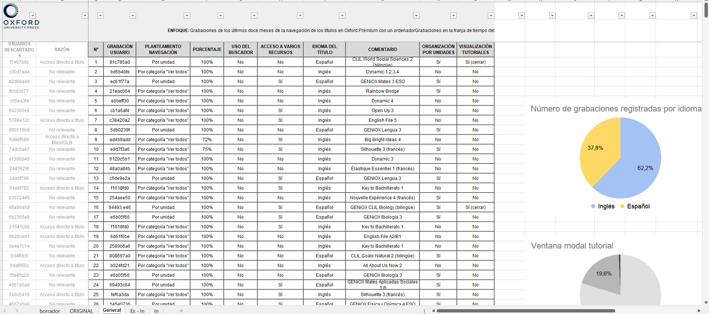
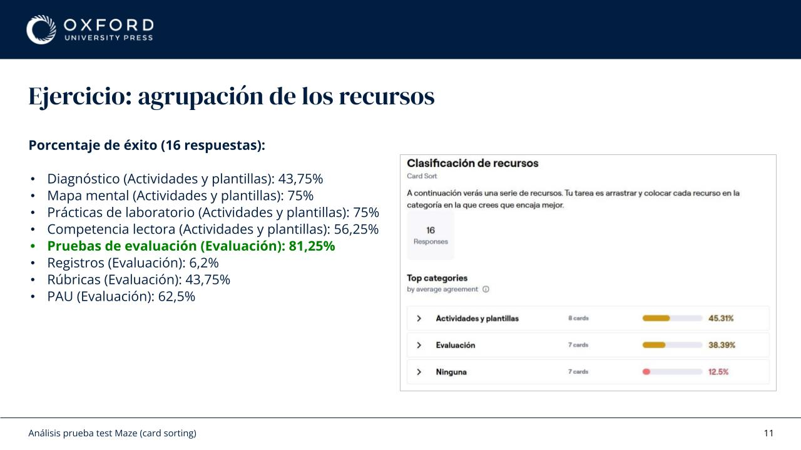
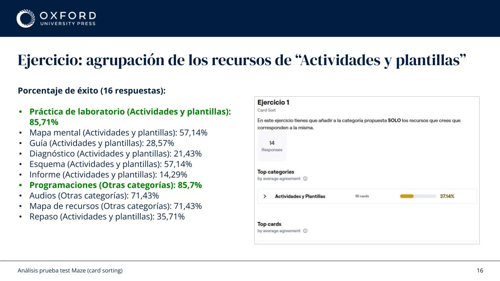
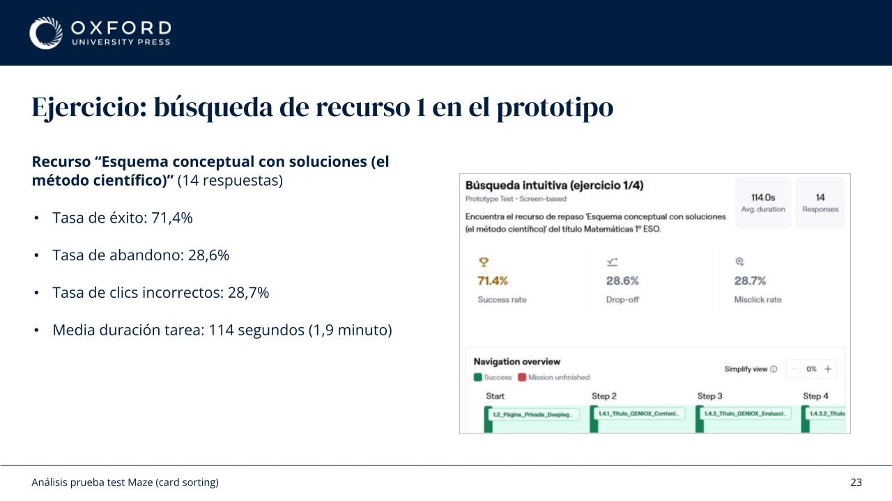
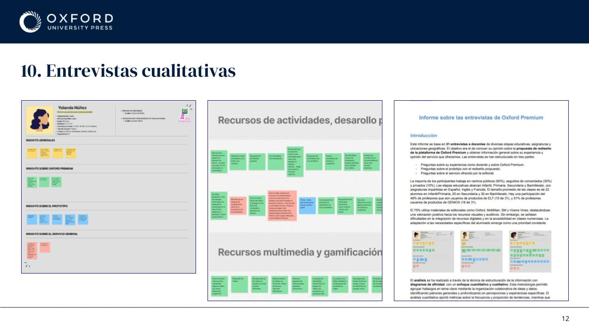
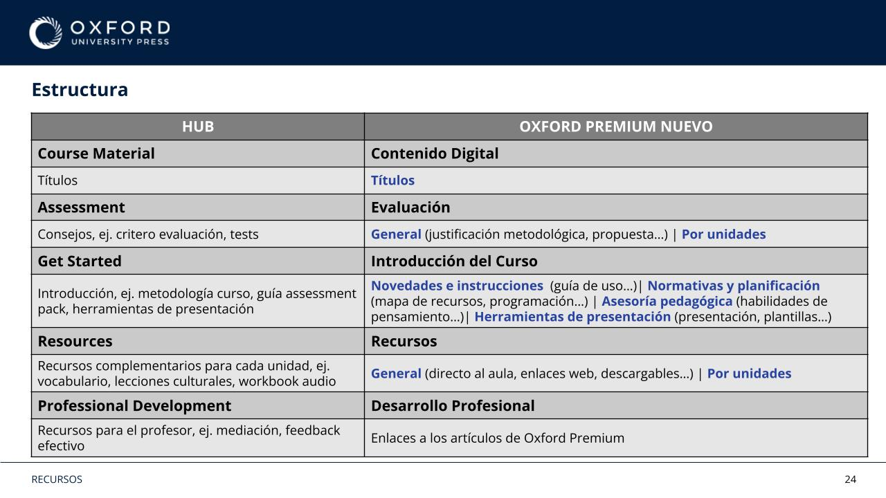
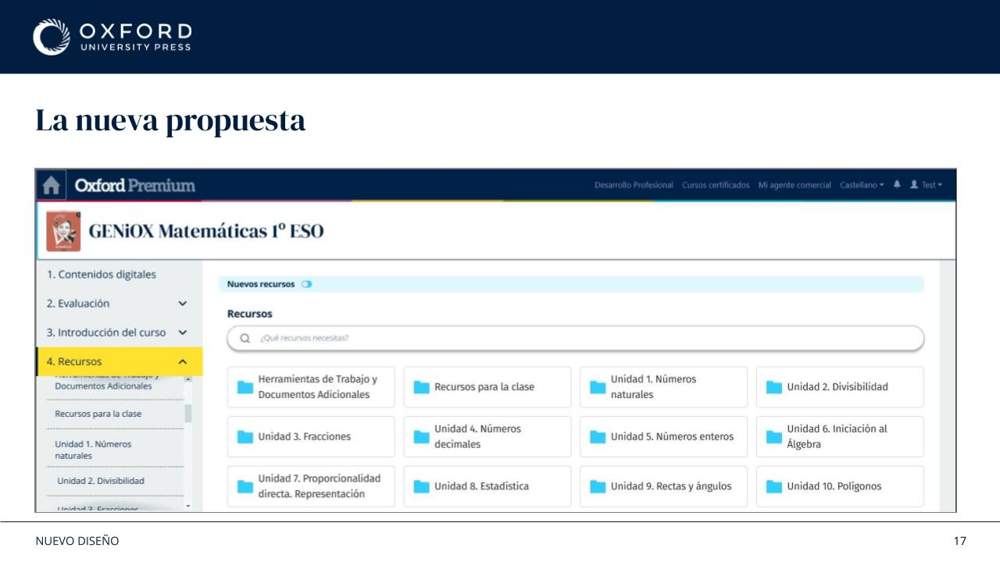

Reorganising a Complex Educational Platform
5 min readTL;DR
Oxford Premium contained thousands of educational resources, multiple navigation paths, and different organisational models depending on the product line.
The challenge was not creating more content. It was helping teachers find and use what already existed.
Through behavioural analysis, user interviews, information architecture work, prototyping, and usability testing, I helped redefine how educational resources were structured and accessed across the platform.
Table of Contents


1. Background
Oxford Premium is a digital platform used by teachers to access books, activities, assessments, videos, audio files, and classroom resources.
Over time, the platform had grown organically. Different products followed different structures, resource naming was inconsistent, and navigation patterns varied between content areas.
The result was a platform that contained a large amount of valuable content, but required significant exploration from users.
Rather than starting with interface changes, I wanted to understand how teachers actually used the platform.


2. Understanding the Problem
I combined several sources of information.
First, I analysed more than 600 Hotjar session recordings.
One finding immediately stood out:
Most users were not exploring the available resources.
Many entered the platform with a specific task in mind, completed it, and left. Discovery was limited.
At the same time, I conducted and analysed 31 interviews with teachers from different educational stages, subjects, and levels of digital confidence.
A recurring theme appeared throughout the research:
Teachers valued the amount of content available, but struggled to understand where things lived and how resources were organised.
The issue was not a lack of resources.
It was information architecture.
3. Defining a New Structure



The next step was to understand how users expected educational resources to be grouped.
I designed and analysed multiple card sorting exercises and validation rounds.
The goal was simple:
Stop organising resources based on internal logic and start organising them based on how teachers think.
This work helped identify clearer groupings and highlighted where terminology created confusion.
The outcome was a simplified structure built around four main categories:
- Activities & Templates
- Assessment
- Planning
- Professional Development
This structure reduced ambiguity and aligned more closely with users' mental models.

4. Design Process
The redesign extended beyond navigation and became an information architecture challenge involving research, taxonomy, content organisation, documentation, and platform alignment.
I reviewed existing platform structures, compared organisational models across products, mapped resource equivalences, and created prototypes exploring different navigation approaches.
A significant part of the work involved understanding and aligning different content ecosystems.
I analysed the organisational model used by the UK platform and compared it with the structures used across the Spanish products.
This required reviewing existing resource libraries, identifying equivalent content across platforms, analysing naming conventions, and documenting inconsistencies that made navigation and maintenance more difficult over time.
The objective was not to replicate one platform within another, but to understand the strengths of each approach and use those insights to inform a clearer and more scalable structure.
Alongside the user-facing work, I also reviewed and restructured internal documentation to improve consistency between content, navigation, and implementation decisions.
One key decision was reducing fragmentation.
Instead of separating content into multiple disconnected areas, the proposal focused on creating a more coherent experience with fewer organisational layers and clearer entry points.
The design process included:
- Behavioural analysis
- User interviews
- Information architecture
- Card sorting
- Interactive prototyping
- Usability testing
- Documentation for stakeholders and developers
- Platform ecosystem comparison
- Resource mapping and taxonomy alignment


5. Beyond the Interface
One thing I learned from this project is that navigation problems are rarely navigation problems.
What looks like a UI issue is often a content, taxonomy, or organisational issue underneath.
A cleaner interface helps.
A structure that matches how users think helps even more.

6. Outcome
The project resulted in a validated information architecture, new navigation proposals, documented resource structures, interactive prototypes, and a clearer framework for organising educational content across the platform.
Beyond improving navigation, the work established a more consistent organisational model that could be applied across different product lines, reducing ambiguity around resource categorisation and providing a stronger foundation for future content growth.
It also aligned product, editorial, and development teams around a shared structure, making future implementation and maintenance more consistent.
More importantly, it shifted the conversation from "How should we display resources?" to "How do teachers actually look for them?"
That change in perspective influenced not only the navigation redesign, but also the decisions that followed across the platform.
This project is subject to confidentiality agreements, so some internal deliverables, research artefacts, documentation, and design files cannot be publicly shared. The examples included here have been adapted to illustrate my process, decisions, and contributions while respecting those commitments.
If you'd like to learn more about the project, my role, or the outcomes achieved, I'd be happy to discuss them during an interview.